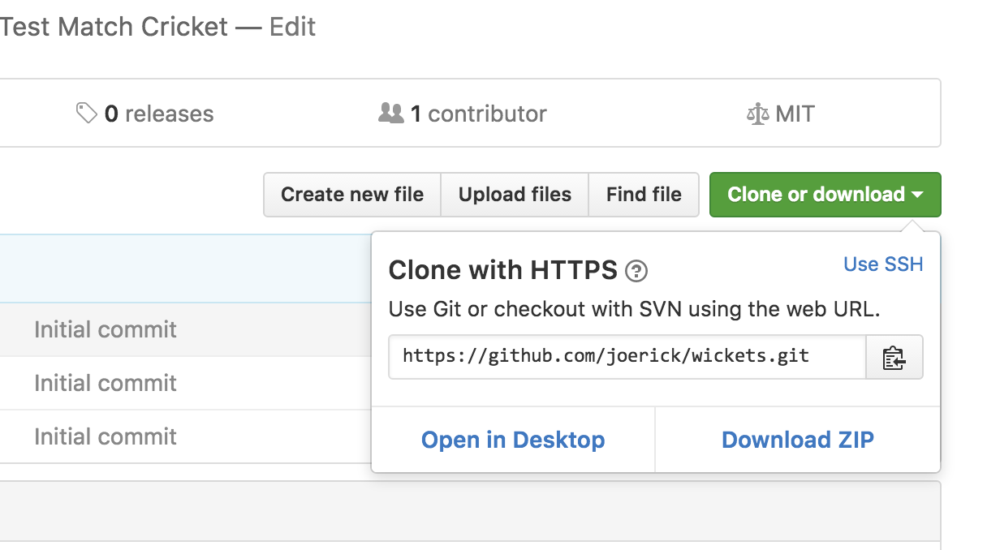

Publishing your app to the Ocean
The Tingbot Ocean is the open-source app store for Tingbot. On the Ocean you can check out what other people have made, and post your own app for other people to use.
Getting your app ready
There are a few things you need to have before putting your app on the Ocean:
- An app that's fun or useful
- An app icon
- Properly filled out app.tbinfo file
Next up, you'll need to make your app downloadable on the web. Our favourite way to do this is post it to GitHub.
Posting to GitHub
If you're familiar with git and GitHub, then put your tingapp folder inside a repo and skip to the next step. If you're not sure how to do that, read on.
First up, make sure you've got Git installed. Install for Mac, Win, or Linux.
Create an account at GitHub by going to github.com, clicking the 'Sign up' button, and follow the instructions.
Once you've got an account, click the ➕ button in the top right and choose 'New repository'.
Note
A repository (or 'repo' for short) is where your code lives. Git repositories also keep track of every change in your code, so you can make changes without worrying that you might break something!
- For the name, enter your tingapp name, without the '.tingapp' part.
- You can add a short description of what your app does.
- Leave it on the Public setting
- Tick the 'Initialize this repository with a README' checkbox
- Choose a Python .gitignore file
- Choose an open source license. We recommend an 'MIT License', because it's nice and simple. For more information, check choosealicense.com
By now, the page should look something like this:

All set? Hit the big green button!
On the next screen, you'll see your new repository. Copy your Git URL from the 'Clone or download' button.

Now open a terminal ('Git Bash' on Windows).
Note
You can now choose where to put the repository on your hard disk. Type
cdto go to your home folder, dols(diron Windows) to look at what's here, and typecd <folder>to move around.
Next, pull the repository down by typing:
git clone <paste your git URL here>
Git will download your repo, into a folder with the name you chose earlier. Now you can add your app, by copying it into the folder that was created.
Note
If you're confused where your repo is, type
open .on Mac,explorer .on Windows ornautilus .on Linux to open the folder in a file browser.
Once you've copied you files into the repo, we can push it to GitHub. Go back to the terminal and type:
cd <your repo name>
git add .
git status
Git will output a list of files that are going to be added. Give it a look over and make sure there's nothing there you don't want to publish. If there is anything, remove the files and do git add . again.
Finally, to push to GitHub, type
git commit -m "Initial commit"
git push
Check your repo page on GitHub, you should see your app appear!
Adding it to the Ocean
Tingbot Ocean is also hosted on GitHub. To add your app, go to the _data/apps.yaml page and add an entry for your app.
Click the pencil icon to edit, and then add your app. Just copy one of the existing entries and fill in your own information. Fields of note-
icon- this is a URL to your app's icon. An easy way to point at your app's icon is to use the GitHub 'raw' URL, which has the format:https://raw.githubusercontent.com/<username>/<appname>/master/<appname>.tingapp/icon.pngzip_url- A URL to a zip download of the app. Again, GitHub makes this easy -https://github.com/<username>/<appname>/archive/master.zipgithub_url(optional) - If the app's hosted on GitHub, the GitHub repo link -https://github.com/<username>/<appname>screenshot_url(optional) - a URL to a screenshot of your app
Save your change, and we'll get a pull request for your app. We'll take a quick look to review and then you should be live!